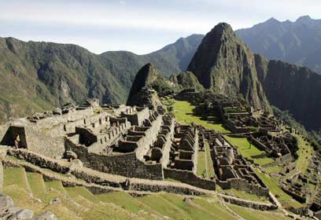
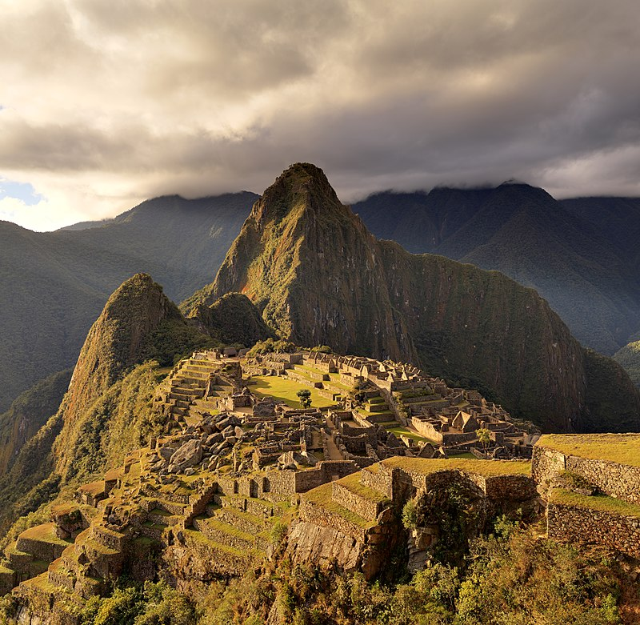
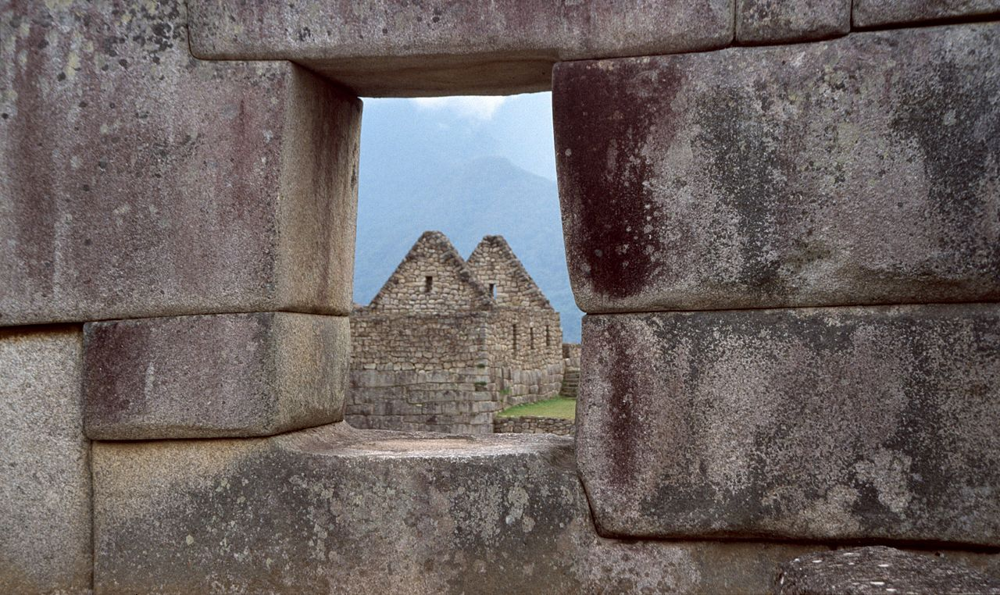

מאצ'ו פיצ'ו

ארץ: פרו עיר: מאצ'ו פיצ'ו תאריך בנייה: 1450
עיר קדם-קולומביאנית של תרבות האינקה. העיר, שהייתה מיושבת בתקופה שבה הייתה תרבות האינקה בשיא פריחתה, נמצאת על רכס הרים מעל עמק אורובמבה בפרו, במרחק של כ-70 ק"מ מהעיר קוסקו.


המבנים במאצ'ו פיצ'ו בנויים מאבנים גדולות ומסותתות, והן הותאמו בדייקנות זו לזו ולכן אין שכבת טיט ביניהן. המבנים כוללים אתרי פולחן לשמש ולגשם, אחוזת קבר, מקדש ואתרים נוספים. כמו כן, נמצאה מחצבה שבה חצבו אבנים לבניית בתי העיר המחוברת באמצעות שביל לעיר קוסקו.